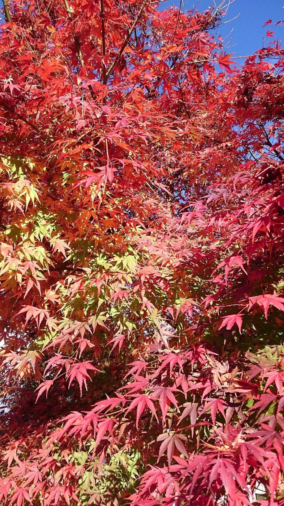
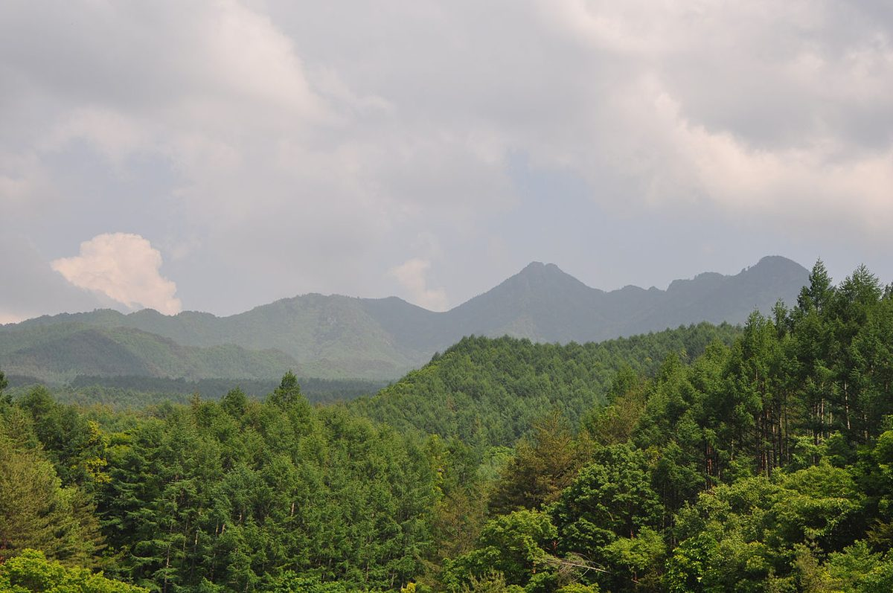

掲載している写真は、フリー素材のイメージです。カフェ Ｔ’ｓ の実際の店内・メニュー・外観ではありません。白山市以外の場所で撮影されたものや、撮影地が不明なものを含みます。
NOTE 01 / 石川県白山市柴木
カフェ Ｔ’ｓ
石川県白山市柴木にあるカフェのご案内ページです。所在地・電話・Instagramをまとめています。営業時間やメニューなど、まだ分からないことは「準備中」としています。



01お店のメモ
- 所在地
- 〒920-2164 石川県白山市柴木２丁目１０４
- @cafe2021ts
- 営業時間・定休日
- 準備中(お問い合わせください)
- メニュー・料金
- 準備中(お問い合わせください)
02ページの案内

03制作側のコンセプト案
これは制作側の案です。お店の考えを決めつけず、手帖のように「必要なことだけを静かに並べる」ページを目指しました。お店の実際の想いは、ご本人の言葉に差し替えられます。